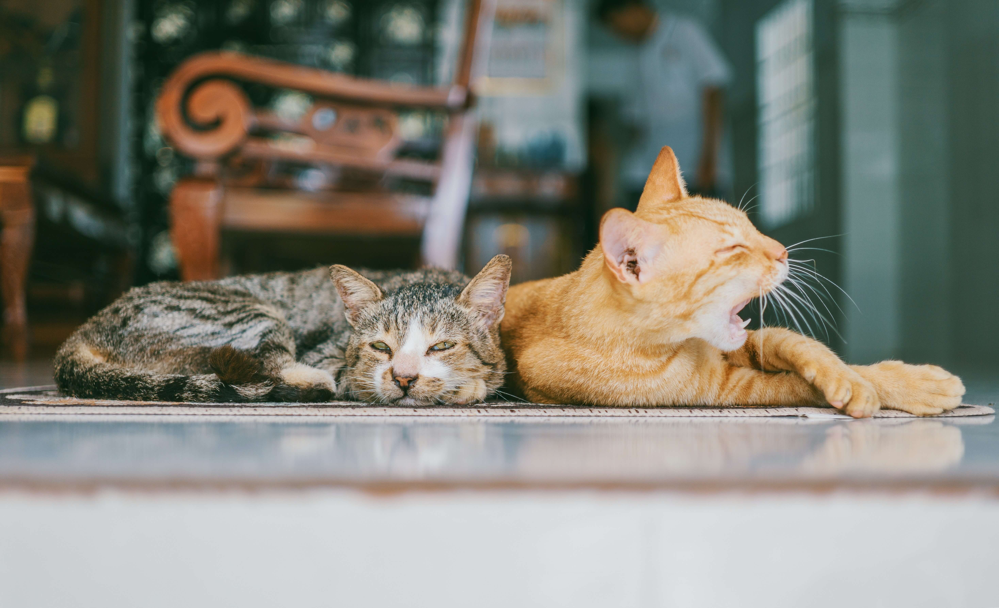

Our Feline Friends is a cat rescue centre which was opened in 2020 by Nina Persson in Malmö, Sweden. With a love of cats and a realisation that there were many strays in need in the city, Nina converted her back garden into a shelter and began taking in her first cats.
A team of dedicated volunteers now work with Nina to make sure that homeless cats can be saved from a life on the streets and find their loving forever home. Through generous public donations and support, the work continues.
We have lots of cats just waiting to meet their new owner. Click on our cats pictures below to find out more about each of them and their characters. When you have found the one, contact us through our form or call us at our centre on 040 123 456. We will send you an application form to fill in where you can tell us about yourself and your living situation. Then you are welcome to come and visit your new feline friend, we will follow up with a home visit and soon you will be able to enjoy the love that a pet can bring to your home!
Click on the pictures below to find out more about each of the cats!
WANT TO KNOW HOW YOU CAN SUPPORT US?You can make a cash donation to us. Even the smallest amount can help us so much. You can make a payment by Swish to our number 040 123 456 or by bank giro to our account 1234 123456.
We accept donations of cat food, toys, blankets, and cat litter. These help us to continue to help as many cats as we can and to make them feel comfortable and secure. Donations of goods can be posted to our address at Linnegatan 1, Malmö 21158 or dropped off in person.
The greatest way you can support us is to adopt one of our cats and give it a forever home. We request an adoption donation of 1000 SEK which goes back into the care of our cats and veterinary costs.